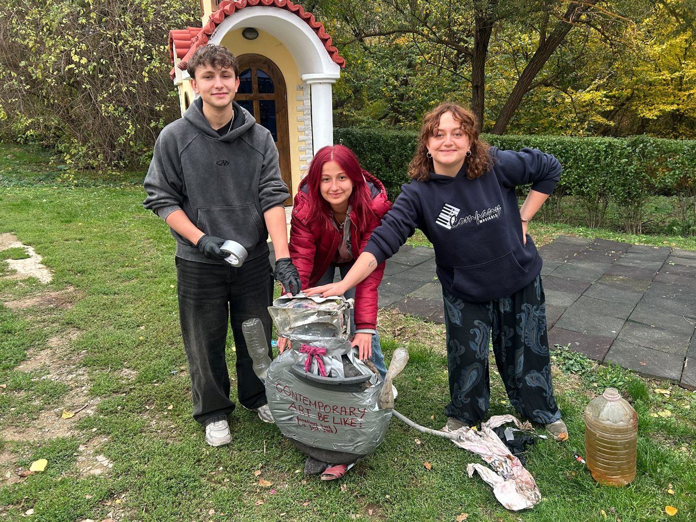
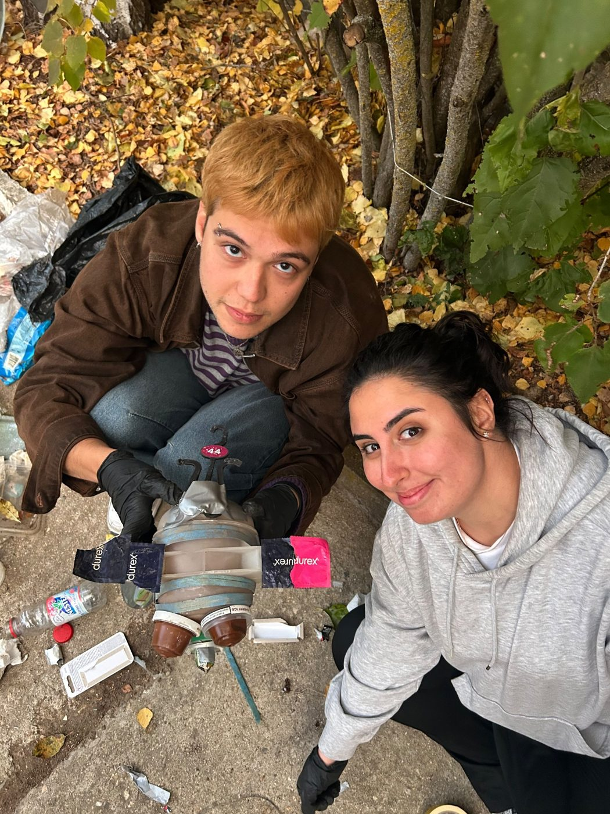

„Green Facilitator“ беше обучителен курс по Еразъм+, който събра младежки работници и млади хора от Полша, България, Румъния, Турция, Испания и Унгария в центъра „Ютопия“ – място сред природата в горите на Сърнена Гора, точно до Стара Загора, за да се научат как да провеждат екологични уъркшопи, които наистина достигат до младите хора. Вместо да говорят за катастрофи, участниците се научиха да работят с еко тревожността и климатичната апатия, да използват методи на участие, при които всеки глас е чут, и да превръщат грижата за планетата в надежда, креативност и практически действия. Голяма част от програмата се проведе навън, сред природата.
Курсът започна на 26 октомври с изграждане на екип, игри за разчупване на леда и разговори по двойки и в малки групи. В голям кръг всеки сподели какво го е довело тук, както и своите очаквания, страхове и мотивация, преди екипът да представи целта на седмицата: да даде на младежките работници инструменти за провеждане на екологични уъркшопи, които вдъхновяват младите хора и превръщат еко тревожността и апатията в действие.
Вторият ден започна с разходка със затворени очи. По двойки – единият със завързани очи, а другият водач – участниците опознаха природата около мястото чрез звуци, допир и мирис и откриха колко много пропускаме, когато само гледаме. След това групата почисти гората и близкото село и превърна събраното – от стари гуми и пластмасови бутилки до счупена лампа и много тиксо – в junk art и скулптури. Една от творбите носеше посланието „Contemporary art be like: sometimes junk is just junk“ – напомняне, че всеки отпадък стига някъде.

През третия ден участниците влязоха в ролята на фасилитатори и проектираха свои собствени екологични уъркшопи: поставиха цели, избраха методи и планираха как да достигнат до младите хора по забавен, активен и смислен начин. След това проведоха първите тестове с групата – много от тях навън, в двора, по улиците на селото и по горските пътеки, – последвани от честна обратна връзка и подобрения. Тези уъркшопи ще бъдат събрани в наръчник за младежки работници.


Четвъртият ден беше културен ден за почивка и презареждане, с посещения в Стара Загора и Пловдив – два от най-старите градове в България.
Петият ден, „Every Voice Counts“, беше посветен на Liberating Structures – прости групови формати, които гарантират, че всеки е чут, а не само най-гръмките. В 1-2-4-All участниците преминаха от тихо обмисляне към работа по двойки, по четирима и с цялата група, за да отговорят на въпроса: „Ако бяхте 10 пъти по-смели, какво екологично действие бихте направили с младите хора тази година?“ В 25/10 Crowd Sourcing те написаха, размениха и анонимно оцениха идеи за почти безотпадъчен проект по Еразъм+. В TRIZ планираха „най-лошия и най-неустойчив младежки обмен за екология в историята“, след което честно се запитаха кои от тези навици вече имат, и поеха ангажимент да ги спрат.
През шестия ден малки групи обсъждаха, спореха и оформяха свои идеи за младежки обмени по Еразъм+ на тема екология и климатични действия, като използваха Ръководството за програма „Еразъм+“ и поуките от предишни проекти. Екипите създадоха и интерактивни игри-викторини в Blooket и ги проведоха с останалата част от групата, като изпробваха готов за използване дигитален инструмент, подходящ за всяка тема.